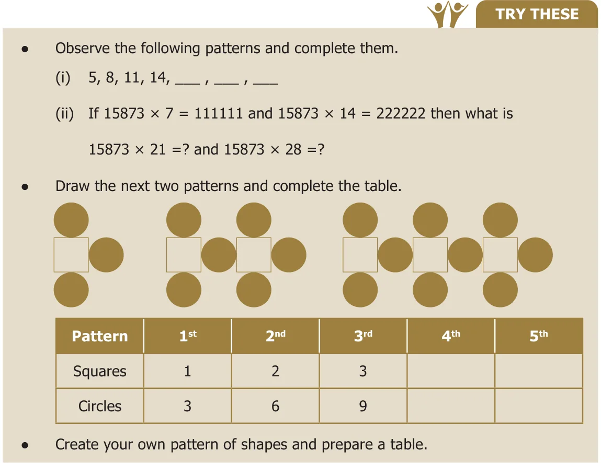
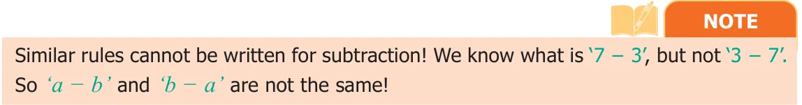

Mathematics is easy when we look at it as a study of patterns. Patterns allow us to make reasonable guesses. Understanding patterns provide a clear basis for problem solving skills. In this chapter, we are going to look at patterns that deals with numbers. For example, let us list the numbers we know in order
1, 2, 3, 4, 5, 6, 7, 8, 9, 10...
We observe that 1 is odd, 2 is even, 3 is odd, 4 is even etc. Thus odd numbers and even numbers alternate with each other. If these is a sequence 12, 8, 4 … can you find the next number? Easy, each number is obtained by subtracting 4 from the previous number. So the fourth number is 0.
The branch of Mathematics that deals with such patterns is called Algebra. Today Algebra is used widely in many fields that include banking, insurance, accounting, statistics, science, engineering, manufacturing and so on.

2.2.1 Patterns in Number Operations
In the first chapter on Whole Numbers, you have learnt about numbers that are multiplied by 1 or 0.
For example, we know, \(57 \times 1 = 57\) and \(43 \times 0 = 0\).
But we also know that this statement is true for all numbers (not just for the above two). So, can we say “any number” \(\times 1 =\) "the same number" that we started with?
Algebra gives a way for writing such facts in a short and sweet way. We can write the above statement as \(n \times 1 = n\), where n is a number. Here n on the left-hand side is just a letter that is used instead of saying "any number". The number on the right-hand side is the same n. This ensures that we get a correct statement!
In Algebra, we say that “n” is a variable. A variable is a symbol (usually an alphabet like n or x) that represents a number. Variables often help us to write briefly what we mean by a relation. In \(n \times 1 = n\), left side number quantity 1 do not vary always. So we call it as constant.
For example, the following patterns such as,
\(7 + 9 = 9 + 7\)
\(57 + 43 = 43 + 57\)
\(123 + 456 = 456 + 123\)
\(7098 + 2018 = 2018 + 7098\)
\(35784 + 481269841 = 481269841 + 35784\)
can be simply summarized as \(a + b = b + a\).
Here, we have two variables namely “a” and “b”. Each variable can take “any value”, but the value of ‘a’ is the same on both sides, and the value of ‘b’ is also the same on both sides. But, the values of ‘a’ and ‘b’ need not be equal to each other.
Can you give a similar intrepretation for \(a \times b = b \times a\) ?
